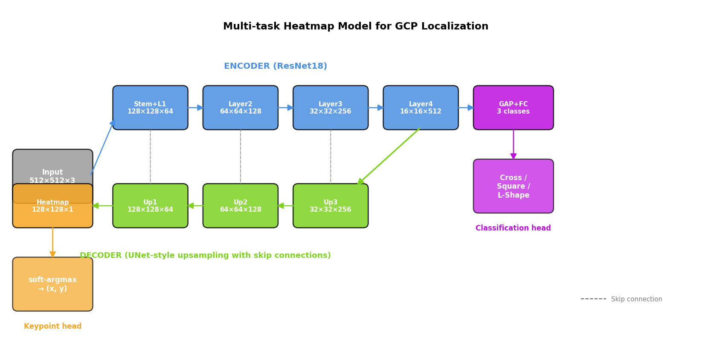
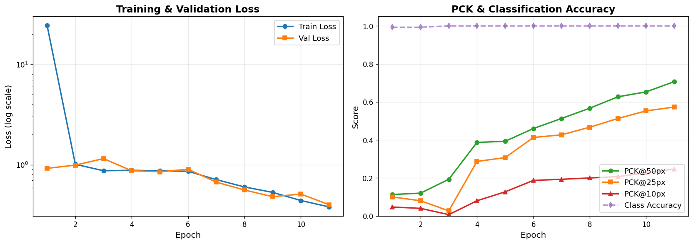

Finding tiny markers
in vast aerial scenes.
A multi-task deep learning model that locates ground control point markers in 4096×3068 drone imagery and classifies their shape — solving both tasks in a single forward pass with a ResNet18 + UNet decoder architecture.
A surveyor's chalk on a satellite's canvas.
Drone-based photogrammetry maps construction sites, mines, and infrastructure projects with centimeter-level accuracy. To anchor the resulting 3D models to real GPS coordinates, surveyors place physical markers on the ground — Ground Control Points, or GCPs — before flying the drone.
These markers are tiny. In a 4096-pixel-wide aerial image, a GCP might span just 60-100 pixels. Locating their exact center across thousands of images, manually, is the kind of repetitive high-precision work that humans hate and computers should do.
The task: build a model that, given a drone image, predicts (x, y) for the marker center and classifies the marker shape — Cross, Square, or L-Shape. Both at once.
Heatmaps, not coordinates.
The intuitive approach is to add a 2-output linear layer on a CNN and regress
(x, y) directly. It does not work. Across multiple loss formulations and
hyperparameter sweeps, the model collapsed to predicting the image center for every input.
The fix is architectural, not numerical. Instead of regressing scalars, the model produces a 128×128 heatmap with a Gaussian peak at the marker location, then decodes it with soft-argmax for sub-pixel precision. Spatial information is preserved end-to-end.

Two heads share the encoder: the heatmap decoder upsamples back to 1/4 input resolution with
skip connections (UNet pattern), while the classifier uses global average pooling on the deepest
features. Loss: 1000 × MSE(heatmap) + class-weighted CE(shape).
The dataset lied. Multiple times.
The assignment described "real-world production conditions, not perfectly sanitized." It wasn't bluffing. EDA before training surfaced four distinct discrepancies between the spec and reality:
Training curves & validation metrics.
The model trained for 12 epochs with cosine learning-rate scheduling. After epoch 3, the heatmap began to sharpen and PCK metrics climbed monotonically through the rest of training. Classification accuracy was solved by epoch 3 and held steady.

Going from PCK = 0.000 to PCK@50 = 0.707 wasn't a hyperparameter tweak — it was switching architectures.
Five attempts. Four failures. One lesson.
The most useful artifact in this project isn't the final model — it's the debug trail. Each failed attempt narrowed the hypothesis space until the architectural fix became unavoidable.
The breakthrough diagnostic was logging pred.std() vs gt.std() during
validation — once 0.05 vs 0.23 appeared on screen, "the model can't move predictions
away from the mean" became unambiguous, and that's an architecture problem, not a learning-rate
problem. Direct (x, y) regression discards spatial information through global pooling. Heatmap
regression preserves it.
See it run on your drone images.
Upload any aerial image with a GCP marker and watch the model predict the location and shape in real time. All source code and the trained model are available on GitHub.